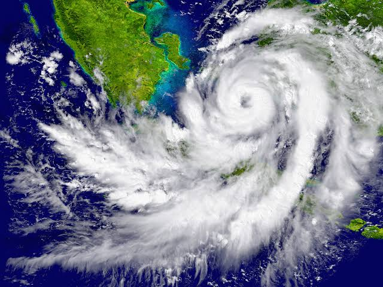
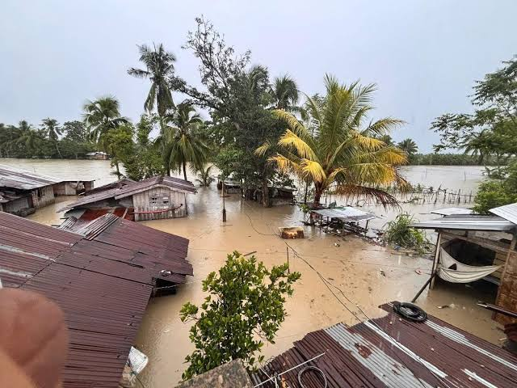
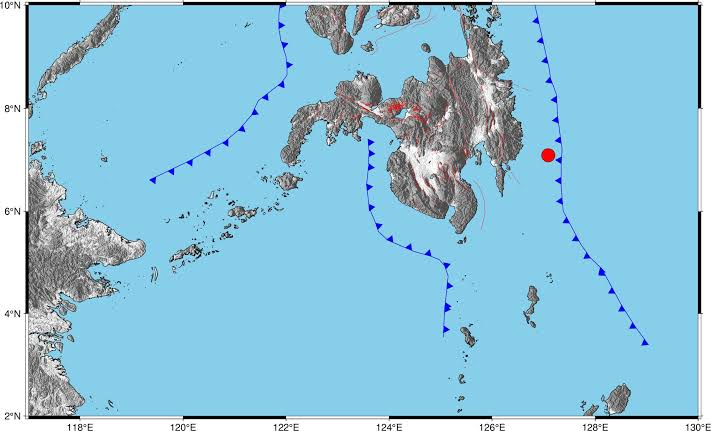
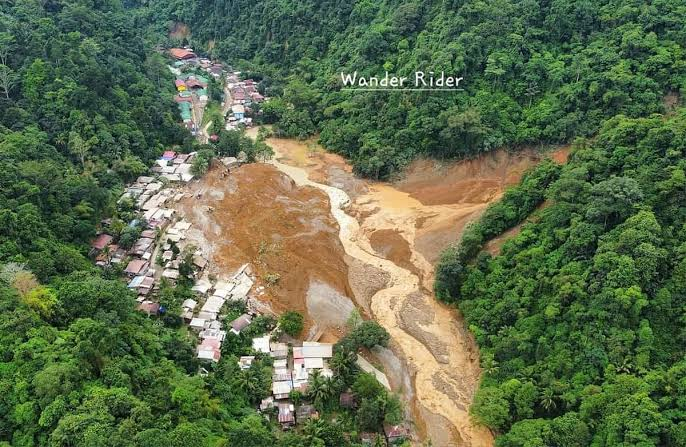
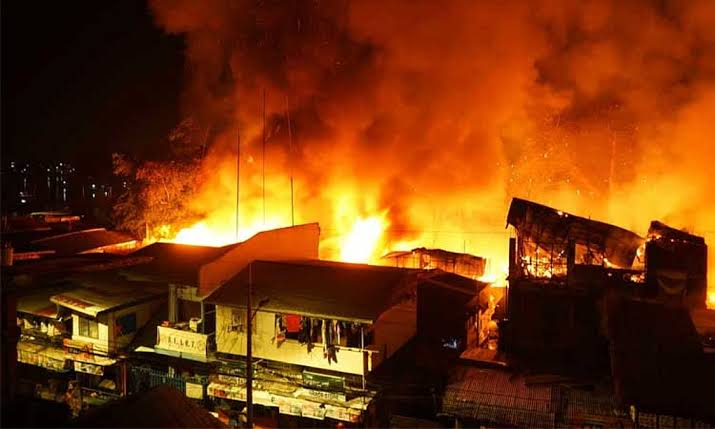

Before
Learn local hazards, prepare a go-bag, and agree on a meeting place.
Stay informed, make a plan, and know where to turn when emergencies happen. A few simple steps today can help protect you, your family, and your community.
Being prepared helps you make safer decisions, find trusted information, and support the people around you. Learn about local hazards, talk through a family plan, and follow instructions from local authorities.
Learn local hazards, prepare a go-bag, and agree on a meeting place.
Keep calm, follow official instructions, and move away from danger.
Wait for safety clearance, check for hazards, and reconnect with loved ones.
For urgent emergencies in the Philippines, call 911. Tap a number to call from your phone.
For immediate danger, call 911. These local office numbers are listed for Asuncion, Davao del Norte; contact the offices directly for assistance.
Open the responsible agency's current page for updates on weather, typhoons, floods, and earthquakes.
No live local feed is displayed on this site. Check the issue time and affected area on each official advisory; conditions can change quickly.
For other hazards and community announcements, follow verified local DRRMO and barangay channels.
The Asuncion Safety Hub brings practical preparedness guidance and links to official emergency information together in one place.
This website helps residents understand common hazards, prepare households, and find official emergency numbers and alert sources. It is an informational resource, not a government alert or emergency dispatch system.
Residents, families, students, caregivers, community volunteers, and visitors can use these pages to review basic preparedness and identify local details they still need to confirm.
Share clear, practical preparedness information and guide people toward reliable official sources before and during emergencies.
Communities where people know their risks, support one another, and make informed safety decisions.
Knowing where to get official updates, what essentials to take, and how to reconnect with family can make a difficult situation more manageable. Preparedness does not remove every risk, but it can help people respond more safely.
Hazards and safe actions vary by location. Follow your barangay, local disaster risk reduction and management office, and relevant national agencies. Confirm local evacuation locations and contact details before you need them.
Learn common warning signs and general ways to prepare. Always follow the latest official instructions for your location and the specific hazard.

A tropical cyclone can bring strong winds, heavy rain, flooding, landslides, and coastal storm surge.
Warning signs: Official cyclone bulletins, wind signals, and local evacuation instructions.

Flooding occurs when water covers normally dry land, sometimes rapidly and with dangerous currents.
Warning signs: Heavy or prolonged rain, rising waterways, and official flood alerts.

Earthquakes are sudden ground movements caused by energy released within the Earth's crust. Shaking can damage buildings and trigger landslides.
Warning signs: Earthquakes cannot be reliably predicted; monitor PHIVOLCS bulletins and local advisories.

A landslide is the movement of rock, soil, or debris down a slope. Heavy rain and earthquakes can contribute to slope failure.
Warning signs: New ground cracks, leaning trees or posts, unusual seepage, and rumbling sounds.
Know whether your home is near a steep or unstable slope. Move away from a slide path, follow evacuation instructions, and stay away from the area afterward.

Fires spread heat and smoke and may cause burns, breathing problems, and structural damage.
Warning signs: Smoke, unusual heat, a burning smell, or an active alarm.
Keep exits clear and plan two ways out. Leave immediately if there is a fire, stay low under smoke, call 911 from a safe place, and never re-enter.
Local office contact details for Asuncion, Davao del Norte are listed below. Keep these numbers accessible and follow instructions from emergency responders.
+63 998 598 7107
Location: Near the Asuncion Municipal Hall, Brgy. Cambanogoy, Asuncion, Davao del Norte.
Email: asuncion_mps_dnppo@yahoo.com
Call MPS0960-246-2988
Location: Asuncion Municipal Hall, National Highway, Asuncion (Saug), Davao del Norte.
Call BFPContact the Municipal Health Office for health and medical assistance.
0961-073-4316
Call MHOThe Philippine Red Cross lists 143 as its emergency hotline.
Call 143Verify on the official contact page ↗Contact the municipal office for disaster risk reduction and emergency management assistance.
0946-848-8040
Call MDRRMOAsk your barangay for its official emergency response number and after-hours procedure. Do not rely on unverified social posts.
Find the provided evacuation point, nearby medical facilities, and disaster-response contacts for Asuncion, Davao del Norte. Confirm current site status and instructions with local authorities before traveling.
Purok 3, Barangay Cambanogoy, Asuncion, Davao del Norte, Philippines.
This location serves as an evacuation point for residents during emergencies, subject to local government designation and activation. Confirm that it is open and designated before traveling.
Use the address links to check the current route and facility location. Contact local services to confirm availability during an emergency.
Kapalong, Davao del Norte, Philippines.
The nearest identified hospital for residents of Asuncion who may need medical assistance.
Asuncion, Davao del Norte, Philippines.
Provides local health services and ambulance access for residents who need medical assistance during emergencies.
Contact: 0961-073-4316
Each map uses a Google Maps address search rather than unverified coordinates. Check the returned pin and route before setting out.
Asuncion, Davao del Norte provides disaster and evacuation support through its Municipal Disaster Risk Reduction and Management Office (MDRRMO), coordinating with the Provincial Disaster Risk Reduction and Management Office (PDRRMO) and national agencies like the Department of Social Welfare and Development (DSWD) and the Philippine Coast Guard during floods and severe weather.
Coordinates municipal preparedness, local evacuation information, incident response, and requests for assistance with barangays and partner agencies.
Call 0946-848-8040Supports coordination among local governments and provincial response resources during emergencies.
Provides social welfare support and coordinates relief assistance for affected families, subject to response arrangements.
May support search-and-rescue and water-related response operations in coordination with relevant authorities.
Agency participation and available services depend on the incident and official coordination. Follow current instructions from local authorities; call 911 for immediate danger.
Start with the essentials, then adjust your plan for local hazards, household needs, and official guidance.
Include clean dressings, bandages, gloves, and items recommended by a recognized first-aid provider. Check supplies regularly.
Take training from a qualified provider. For serious injury or illness, call 911 and follow the call-taker's instructions.
Do not enter unsafe buildings, floodwater, fire, or hazardous areas to provide help. Wait for trained responders if the scene is unsafe.
Know local hazards and evacuation routes, assemble supplies, secure your home when safe, and rehearse the family plan.
Monitor trusted updates, evacuate when told, avoid hazards, and use your agreed communication plan.
Check for immediate hazards, use safe water and food, check on neighbors when safe, and replenish used supplies.
Use these reminders alongside official instructions. If advice conflicts, follow current guidance from local authorities and emergency responders.
For immediate danger, call 911. This website is not monitored by responders and cannot dispatch help.
For local directions, evacuation sites, and current alerts, check with your local authorities.
Protect yourself from immediate danger, follow official instructions, and call 911 for urgent help. If authorities direct evacuation, use the recommended route and go to a confirmed safe location.
Check PAGASA for weather, typhoon, and flood bulletins; check PHIVOLCS for earthquake information; and follow your local DRRMO and barangay for local instructions. Always check the issue time and affected area.
Confirm the designated center, whether it is open, and the safest route with your barangay or municipal DRRMO. This website does not list unverified centers.
Consider drinking water, ready-to-eat food, essential medicines, first-aid supplies, a flashlight, batteries, important document copies, cash, and household-specific items.
Choose meeting places, identify an out-of-area contact, plan for children, older adults, people with disabilities, and pets, and practice how you will communicate if phone service is disrupted.
No. The report form is disabled because it is not monitored or connected to responders. For an active emergency, call 911 directly.
No live local warning feed is connected. Use the linked official agency pages and local government channels for the latest verified advisories.
Contact your barangay or local DRRMO in advance to discuss accessibility and support. Add a trusted helper and backup transport plan to your household plan.
Build a culture of readiness by sharing verified information, practicing together, and including neighbors who may need extra support.
Coordinate activities with your barangay, school, or local DRRMO. These ideas are suggestions, not scheduled events.
Invite households to review official evacuation routes and identify where to get local instructions.
Review water, medicines, documents, batteries, and household-specific supplies.
Encourage families to choose meeting places, share contact information, and practice reunification plans.
Text-first reminders for family and community discussions. Confirm details with official guidance.
This page does not publish dates, evacuation orders, or live announcements. Check official barangay and municipal channels for current activities and local warnings.
Share confirmed instructions in clear language and accessible formats. Check on neighbors when safe, and avoid spreading unverified photos, warnings, or personal details.
Have questions or need assistance regarding disaster preparedness in Asuncion, Davao del Norte? Contact the appropriate local offices using the information provided below. Stay informed, prepared, and connected with your community.
Phone links open your device's calling app. For urgent situations, contact responders directly.
Phone: +63 998 598 7107
Email: asuncion_mps_dnppo@yahoo.com
Location: Near the Asuncion Municipal Hall, Brgy. Cambanogoy, Asuncion, Davao del Norte.
Call MPSPhone: 0960-246-2988
Location: Asuncion Municipal Hall, National Highway, Asuncion (Saug), Davao del Norte.
Call BFPPhone: 0961-073-4316
Location: Asuncion, Davao del Norte.
Call MHOPhone: 0946-848-8040
Location: Asuncion, Davao del Norte.
Call MDRRMOUse this form for general questions, suggestions, and feedback about the website.
The form prepares an email addressed to the Asuncion Municipal Police Station. It uses your device's email app, and you may review the message before sending it.